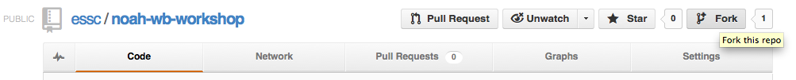
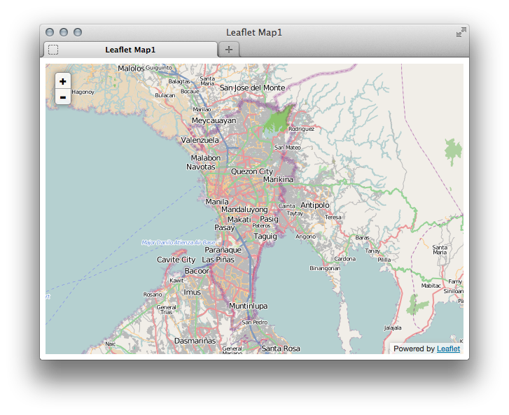
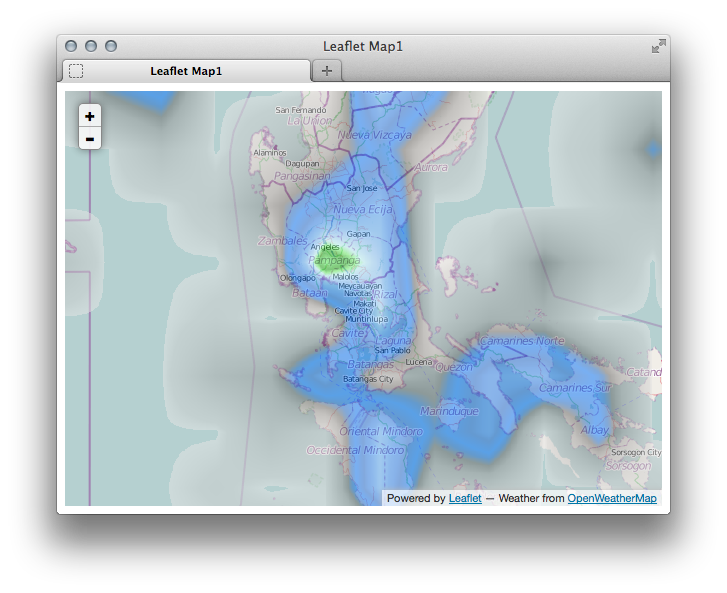

Git is a distributed revision control and source code management (SCM) system with an emphasis on speed. Initially designed and developed by Linus Torvalds for Linux kernel development, Git has since been adopted by many other projects.
Every Git working directory is a full-fledged repository with complete history and full revision tracking capabilities, not dependent on network access or a central server.
Git is free software distributed under the terms of the GNU General Public License version 2.
1. Create a GitHub account, go to: https://github.com/users
2. Set up Git in your machine. Open the Terminal.
Add your username
$ git config --global user.name "Your Name Here"
# Sets the default name for git to use when you commit
Add your email
git config --global user.email "your_email@example.com"
# Sets the default email for git to use when you commit
Your email address for Git should be the same one associated with your GitHub account.
3. Password caching. Tell git that you don’t want to type your username and password every time you talk to a remote server.
$ git config --global credential.helper cache
# Set git to use the credential memory cache
$ git config --global credential.helper 'cache --timeout=3600'
# Set the cache to timeout after 1 hour (setting is in seconds)
We will start editing some files to the noah-wb-workshop repository.
1. To fork the repo, go to: https://github.com/essc/noah-wb-workshop
2. Click the Fork button.
The repo is now forked in your own GitHub account, but, you need to clone the project in your local machine to work on the project.
3. Cloning your fork. In the Terminal,
$ git clone https://github.com/username/noah-wb-workshop.git
# Clones your fork of the repository into the current directory in terminal
4. Configuring remotes. We will add a new remote in order to keep track and get updates from the original essc repository. We will label this as upstream.
$ cd noah-wb-workshop
# Changes the active directory in the prompt to the newly cloned directory
$ git remote add upstream https://github.com/essc/noah-wb-workshop.git
# Assigns the original repository to a remote called "upstream"
$ git fetch upstream
# Pulls in changes not present in your local repository, without modifying your files
1. In your file manager, open the noah-wb-workshop directory. Go to the webmap directory. Open the map1.html in a text editor. This is a page template for a webmap we will create.
<html>
<head>
<meta http-equiv="Content-type" content="text/html; charset=utf-8">
<title>Leaflet Map1</title>
<link rel="stylesheet" href="leaflet.css" />
<script type="text/javascript" src="js/leaflet.js"></script>
<link rel="stylesheet" type="text/css" href="leaflet-openweathermap.css" />
<script type="text/javascript" src="js/leaflet-openweathermap.js"></script>
</head>
<body>
<!-- define a DIV into which the map will appear. Make it take up the whole window -->
<div style="width:100%; height:100%" id="map"></div>
</body>
</html>
2. Let’s add the OpenStreetMap default tiles. Inside the body tag, add the following:
<script type='text/javascript'>
var map = new L.Map('map', {center: new L.LatLng(14.6146, 121.0081), zoom: 10});
var osm = new L.TileLayer('http://{s}.tile.openstreetmap.org/{z}/{x}/{y}.png');
map.addLayer(osm);
</script>
3. Save your html file and open in your webbrowser.
4. Let’s add the Precipitation layer from http://www.openweathermap.org/ . Below the map.addLayer(osm);, add the following:
var precipitation = L.OWM.precipitation({showLegend: false, opacity: 0.5});
map.addLayer(precipitation);
The full html code should look like this:
<html>
<head>
<meta http-equiv="Content-type" content="text/html; charset=utf-8">
<title>Leaflet Map1</title>
<link rel="stylesheet" href="leaflet.css" />
<script type="text/javascript" src="js/leaflet.js"></script>
<link rel="stylesheet" type="text/css" href="leaflet-openweathermap.css" />
<script type="text/javascript" src="js/leaflet-openweathermap.js"></script>
</head>
<body>
<!-- define a DIV into which the map will appear. Make it take up the whole window -->
<div style="width:100%; height:100%" id="map"></div>
<script type='text/javascript'>
<!-- Set map center to Metro Manila at zoom level 10 using OSM Default tile -->
var map = new L.Map('map', {center: new L.LatLng(14.6146, 121.0081), zoom: 10});
var osm = new L.TileLayer('http://{s}.tile.openstreetmap.org/{z}/{x}/{y}.png');
map.addLayer(osm);
<!-- Add precipitation layer from OpenWeatherMap, and set the opacity to 50% -->
var precipitation = L.OWM.precipitation({showLegend: false, opacity: 0.5});
map.addLayer(precipitation);
</script>
</body>
</html>
And your map like this:
1. Let’s commit your changes in your local repository. In the Terminal:
$ git commit -am 'first commit'
# Commits your files, adding the message "first commit"
2. Your commits are now in your local repository. To push your commits to GitHub:
$ git push
# Sends your commits in the "gh-pages" branch to GitHub
3. Go to your Github project page to see the changes.